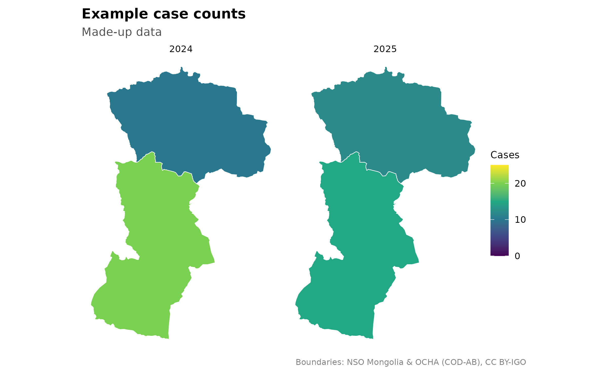
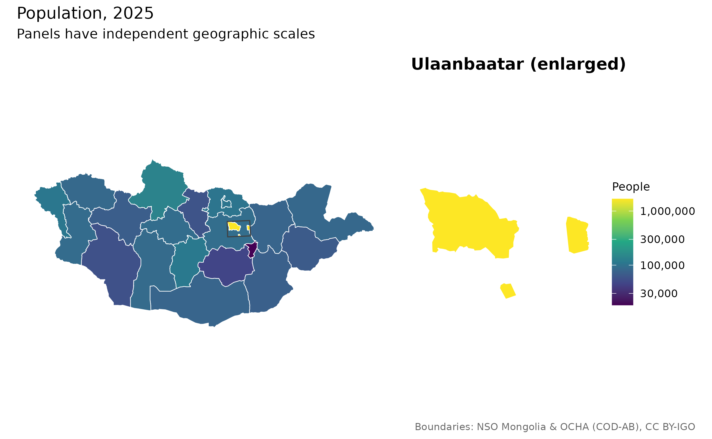
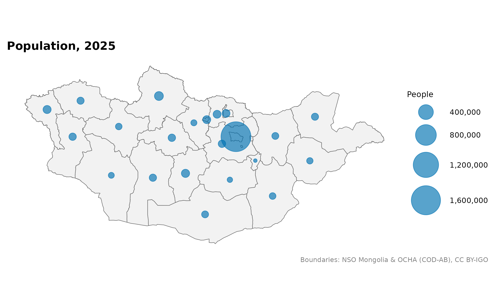

Use this guide after Putting your data on a map. It shows how to check matches, compare years fairly and make small urban areas visible. All examples use data included in the package. For the enlarged map, install patchwork.
Check what happened to every row
Prefer codes over names. If names repeat, use within to
restrict the search to one area, or by_parent to supply
each row’s parent.
district <- mn_join(
data.frame(place = "Bayangol", cases = 12),
"place", level = "soum", within = "Ulaanbaatar"
)
knitr::kable(mn_join_audit(district)[c("row", "x", "pcode", "status", "action")])| row | x | pcode | status | action |
|---|---|---|---|---|
| 1 | Bayangol | MN1107 | exact | joined |
The audit has one row for every original input row. It shows whether a row was joined, left out because it belongs to another level, or not matched. Save the audit separately if you need a permanent analysis record; rebuilding an object can remove its attached metadata.
mn_match(details = TRUE) shows the possible matches and
spelling differences. A small spelling difference is not a probability
that the match is correct.
Stop on uncertain or duplicate matches
strict = TRUE stops on unresolved names, fuzzy matches,
missing boundaries and duplicate place/group combinations. In
strata, list the columns that define separate
observations.
observations <- data.frame(
place = c("Uvs", "Uvs", "Khovd", "Khovd"),
Year = c(2024, 2025, 2024, 2025),
cases = c(10, 12, 20, 15)
)
joined <- mn_join(observations, "place", level = "aimag",
strata = "Year", strict = TRUE, fuzzy = FALSE)
knitr::kable(mn_join_audit(joined)[c("row", "status", "action")])| row | status | action |
|---|---|---|
| 1 | exact | joined |
| 2 | exact | joined |
| 3 | exact | joined |
| 4 | exact | joined |
The counts here are made up to demonstrate the checks.
Use the same colours when comparing years
A value of 10 should have the same colour in both panels. Set
limits and breaks explicitly, or use facets,
which share a scale. Show just the two observed aimags so the comparison
is easy to see.
observed <- joined[joined$pcode %in% c("MN84", "MN85"), ]
mn_map(observed, fill = cases, limits = c(0, 25), breaks = c(0, 10, 20),
title = "Example case counts") +
facet_wrap(~Year) +
labs(fill = "Cases", subtitle = "Made-up data")
For categories, give explicit cut points in bins so
intervals stay the same across maps. Use midpoint = 0 for a
scale centred on zero, such as a change in rates. Keep zeros, missing
values and suppressed values distinct. A map alone cannot show whether a
rate is stable.
Handle Ulaanbaatar’s two NSO codes
NSO code 5 is the capital region and 511 is
the capital at aimag level. Some tables put the same measure under
either code. Check the table’s metadata before treating them as
equivalent.
capital_table <- data.frame(
Region = c("5", "511", "5", "511"),
Month = c("July", "July", "August", "August"),
value = c(10, NA, NA, 20)
)
capital <- mn_join(capital_table, "Region", level = "aimag",
strata = "Month", value_cols = "value")
knitr::kable(sf::st_drop_geometry(
capital[capital$pcode == "MN11", c("Month", "value")]
))| Month | value |
|---|---|
| July | 10 |
| August | 20 |
The default uses a nonmissing capital value and fills gaps from the
region. Conflicting values produce a warning. Use
ub_policy = "error" to stop on conflicts,
"prefer_region" to give the region priority, or
"none" to handle the rows yourself. Do not add region
totals to their component units; that would count people twice.
Enlarge Ulaanbaatar
Small places can disappear at a national scale.
mn_inset_ub() adds an enlarged view without changing the
coordinates used for analysis.
pop <- mn_example_population[mn_example_population$Year == 2025, ]
aimags <- mn_join(pop, "Region", level = "aimag")
mn_inset_ub(aimags, fill = value, trans = "log10",
title = "Population, 2025") &
labs(fill = "People")
The panels share a colour scale but have different geographic scales.
You can supply finer urban data through ub; use the same
measurement units in both panels. See Maps of
Ulaanbaatar for detached district panels.
Compare district population trends
Each panel below shows one district. The charts use real NSO population observations for 2015, 2020 and 2025.
district_pop <- mn_join(
mn_example_population, "Region", level = "soum",
within = "Ulaanbaatar", strata = "Year", value_cols = "value"
)
trends <- sf::st_drop_geometry(district_pop)
ggplot(trends, aes(Year, value / 1000, group = pcode)) +
geom_line(colour = "#0072B2") +
geom_point(colour = "#0072B2", size = 1.5) +
facet_wrap(~name, ncol = 3) +
scale_x_continuous(breaks = c(2015, 2025), expand = expansion(mult = 0.15)) +
labs(x = NULL, y = "People (thousands)", title = "District population") +
theme_minimal(base_size = 10)
All panels share a vertical scale, so their population sizes can be
compared. For a custom geographic layout, mn_aimag_grid and
mn_ub_grid provide approximate tile positions.
Show population with circles
Large rural aimags occupy more space on a map even when they have few residents. Size circles by population to show where people live.
pop <- mn_example_population[mn_example_population$Year == 2025, ]
aimags <- mn_join(pop, "Region", level = "aimag")
mn_map(aimags) +
geom_sf(data = mn_label_points(aimags), aes(size = value),
colour = "#0072B2", alpha = 0.65) +
scale_size_area(max_size = 16, labels = scales::label_comma()) +
labs(title = "Population, 2025", size = "People")
Circle area represents population. Circles can overlap, so use the district trends or the enlarged map when you need precise local comparisons.
Check the boundary date and source
The year of a statistic is not the year of its boundaries.
knitr::kable(mn_vintages()[c("id", "geometry_vintage")])| id | geometry_vintage |
|---|---|
| admin | COD 2020; Ulaanbaatar khoroo-derived 2026 |
| khoroos | 2026 source snapshot; effective date unknown |
| codes | NA |
| admin_high | COD 2020; Ulaanbaatar khoroo-derived 2026 |
knitr::kable(mn_provenance(mn_khoroos())[c("id", "effective_date")])| id | effective_date |
|---|---|
| khoroos | NA |
| codes | NA |
Only data-v1 boundaries are available. Asking for
another boundary_version gives an error. Khoroo boundaries
are unofficial, and their effective date is unknown. Compare historical
data only after checking code changes and boundary compatibility.
Prepare to work offline
This optional recipe downloads selected files before you lose internet access, verifies them and turns on offline mode.
mn_download(c("admin_high", "worldpop_2025_1km"))
mn_cache_verify()
options(mongolmaps.offline = TRUE)WorldPop years and resolutions are opt-in;
mn_download("all") does not download them all. See terrain and population for the limits
of population grids and area summaries.